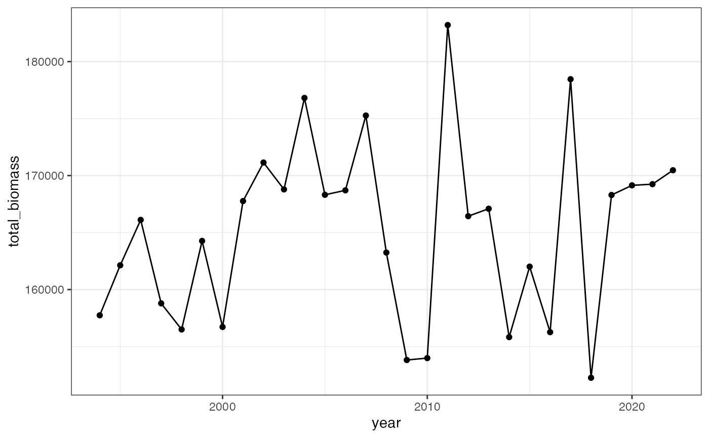
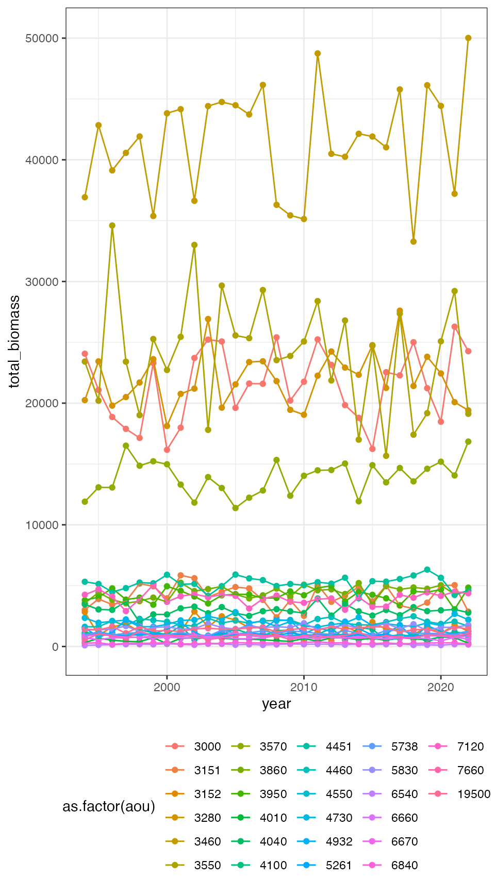
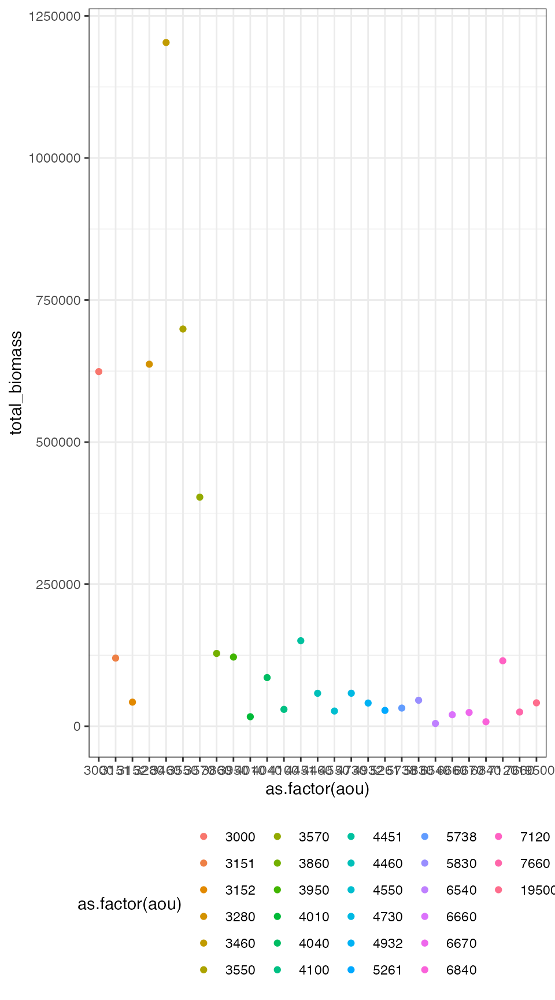
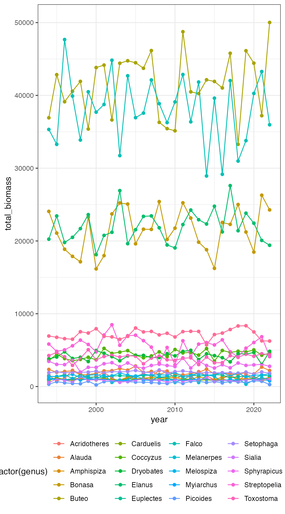

library(birdsize)
library(dplyr)
#>
#> Attaching package: 'dplyr'
#> The following objects are masked from 'package:stats':
#>
#> filter, lag
#> The following objects are masked from 'package:base':
#>
#> intersect, setdiff, setequal, union
library(ggplot2)
theme_set(theme_bw())
bbs_data <- demo_route_raw %>%
filter_bbs_survey()
set.seed(22)
a_community <- community_generate(bbs_data)
annual_summary <- a_community %>%
community_summarize(level = "year")
head(annual_summary)
#> # A tibble: 6 × 15
#> routedataid count…¹ state…² route rpid year speci…³ total…⁴ total…⁵ total…⁶
#> <chr> <dbl> <dbl> <dbl> <dbl> <int> <chr> <int> <dbl> <dbl>
#> 1 90099110119… 900 99 1 101 1994 aou 1361 157742. 353471.
#> 2 90099110119… 900 99 1 101 1995 aou 1443 162130. 366250.
#> 3 90099110119… 900 99 1 101 1996 aou 1413 166114. 368670.
#> 4 90099110119… 900 99 1 101 1997 aou 1381 158790. 357307.
#> 5 90099110119… 900 99 1 101 1998 aou 1415 156500. 356167.
#> 6 90099110119… 900 99 1 101 1999 aou 1412 164269. 368489.
#> # … with 5 more variables: total_richness <int>, mean_individual_mass <dbl>,
#> # sd_individual_mass <dbl>, mean_metabolic_rate <dbl>,
#> # sd_metabolic_rate <dbl>, and abbreviated variable names ¹countrynum,
#> # ²statenum, ³species_designator, ⁴total_abundance, ⁵total_biomass,
#> # ⁶total_metabolic_rate
ggplot(annual_summary, aes(year, total_biomass)) +
geom_point() +
geom_line()
species_annual_summary <- a_community %>%
community_summarize(level = "species_and_year")
head(species_annual_summary)
#> # A tibble: 6 × 21
#> routed…¹ count…² state…³ route rpid year aou sim_s…⁴ genus species mean_…⁵
#> <chr> <dbl> <dbl> <dbl> <dbl> <int> <int> <int> <chr> <chr> <dbl>
#> 1 9009911… 900 99 1 101 1994 3000 3000 Bona… umbell… 532
#> 2 9009911… 900 99 1 101 1994 3151 3151 Stre… chinen… 159
#> 3 9009911… 900 99 1 101 1994 3152 3152 Stre… roseog… 155
#> 4 9009911… 900 99 1 101 1994 3280 3280 Elan… leucur… 346
#> 5 9009911… 900 99 1 101 1994 3460 3460 Buteo plagia… 528.
#> 6 9009911… 900 99 1 101 1994 3550 3550 Falco mexica… 734
#> # … with 10 more variables: sd_size <dbl>, species_designator <chr>,
#> # total_abundance <int>, total_biomass <dbl>, total_metabolic_rate <dbl>,
#> # total_richness <int>, mean_individual_mass <dbl>, sd_individual_mass <dbl>,
#> # mean_metabolic_rate <dbl>, sd_metabolic_rate <dbl>, and abbreviated
#> # variable names ¹routedataid, ²countrynum, ³statenum, ⁴sim_species_id,
#> # ⁵mean_size
ggplot(species_annual_summary, aes(year, total_biomass, color = as.factor(aou))) +
geom_point() +
geom_line() +
theme(legend.position = "bottom")
species_summary <- community_summarize(a_community, level = "species")
head(species_summary)
#> # A tibble: 6 × 19
#> countrynum statenum route rpid aou sim_spec…¹ genus species mean_…² sd_size
#> <dbl> <dbl> <dbl> <dbl> <int> <int> <chr> <chr> <dbl> <dbl>
#> 1 900 99 1 101 3000 3000 Bona… umbell… 532 38.7
#> 2 900 99 1 101 3151 3151 Stre… chinen… 159 11
#> 3 900 99 1 101 3152 3152 Stre… roseog… 155 11.0
#> 4 900 99 1 101 3280 3280 Elan… leucur… 346 23.3
#> 5 900 99 1 101 3460 3460 Buteo plagia… 528. 37.8
#> 6 900 99 1 101 3550 3550 Falco mexica… 734 51.0
#> # … with 9 more variables: species_designator <chr>, total_abundance <int>,
#> # total_biomass <dbl>, total_metabolic_rate <dbl>, total_richness <int>,
#> # mean_individual_mass <dbl>, sd_individual_mass <dbl>,
#> # mean_metabolic_rate <dbl>, sd_metabolic_rate <dbl>, and abbreviated
#> # variable names ¹sim_species_id, ²mean_size
ggplot(species_summary, aes(as.factor(aou), total_biomass, color = as.factor(aou))) +
geom_point() +
theme(legend.position = "bottom")
For example, if you wanted to group by year and genus but not species:
annual_genera_summary <- community_summarize(a_community, level = "custom", id_vars = c("year", "genus"))
head(annual_genera_summary)
#> # A tibble: 6 × 11
#> year genus speci…¹ total…² total…³ total…⁴ total…⁵ mean_…⁶ sd_in…⁷ mean_…⁸
#> <int> <chr> <chr> <int> <dbl> <dbl> <int> <dbl> <dbl> <dbl>
#> 1 1994 Acridot… aou 13 1539. 4103. 1 118. 8.16 316.
#> 2 1994 Alauda aou 62 2350. 8686. 1 37.9 3.43 140.
#> 3 1994 Amphisp… aou 52 942. 4308. 1 18.1 0.224 82.8
#> 4 1994 Bonasa aou 45 24065. 41629. 1 535. 34.7 925.
#> 5 1994 Buteo aou 69 36921. 63859. 1 535. 34.8 925.
#> 6 1994 Carduel… aou 50 796. 3774. 1 15.9 1.03 75.5
#> # … with 1 more variable: sd_metabolic_rate <dbl>, and abbreviated variable
#> # names ¹species_designator, ²total_abundance, ³total_biomass,
#> # ⁴total_metabolic_rate, ⁵total_richness, ⁶mean_individual_mass,
#> # ⁷sd_individual_mass, ⁸mean_metabolic_rate
ggplot(annual_genera_summary, aes(year, total_biomass, color = as.factor(genus))) +
geom_point() +
geom_line() +
theme(legend.position = "bottom")